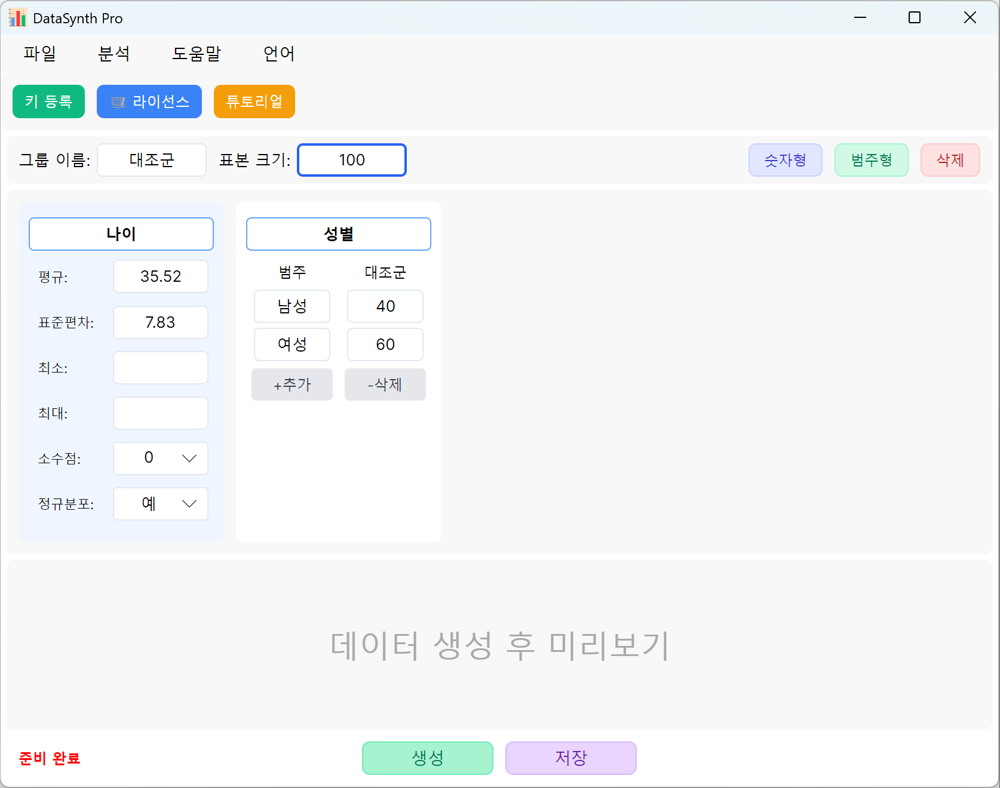

직관적인 매개변수 설정
실험 매개변수를 직관적으로 지정하세요. 코딩 없이 표본 크기, 평균, 표준편차, 예상 결과를 설정할 수 있으며, 정교한 엔진이 수학적 합성을 처리합니다.
- SPSS 호환 내보내기 형식
- 실시간 미리보기 및 통계 검증
- 연속형, 범주형, 생존 데이터 지원

학술 수준의 합성 데이터셋으로 통계 분석 역량을 높이세요. 사회학, 경영학, 통계학, 의학, 금융 등 다양한 분야를 위해 설계되었습니다. 정밀하고 통계적으로 타당한 데이터를 완전 오프라인에서 생성합니다.

학술적 엄밀성을 위해 설계
여러 학문 분야의 동료 심사 연구와 복잡한 통계 모델링이 요구하는 엄격한 기준을 충족하도록 구축되었습니다.
분포, 평균, 표준편차, 정확한 P값을 제어합니다. 실험 설계의 재현성을 보장하고 분석 가설을 매끄럽게 검증할 수 있습니다.
데이터 텔레메트리가 전혀 없습니다. 민감한 임상 또는 금융 구조를 로컬 컴퓨터에서 직접 생성하여 데이터 개인정보 보호 규정(예: GDPR, HIPAA)을 준수합니다.
기본 T검정과 ANOVA부터 Cox 회귀, 로지스틱 회귀, ROC 곡선 분석을 포함한 고급 다변량 프레임워크까지 다양한 연구 요구를 포괄합니다.
실험 매개변수를 직관적으로 지정하세요. 코딩 없이 표본 크기, 평균, 표준편차, 예상 결과를 설정할 수 있으며, 정교한 엔진이 수학적 합성을 처리합니다.
오늘 바로 연구를 강화하세요. 한 번 결제하고 영구적으로 사용하세요.
신뢰할 수 있는 오프라인 합성 데이터 생성이 필요한 연구자, 분석가, 학생에게 적합합니다.